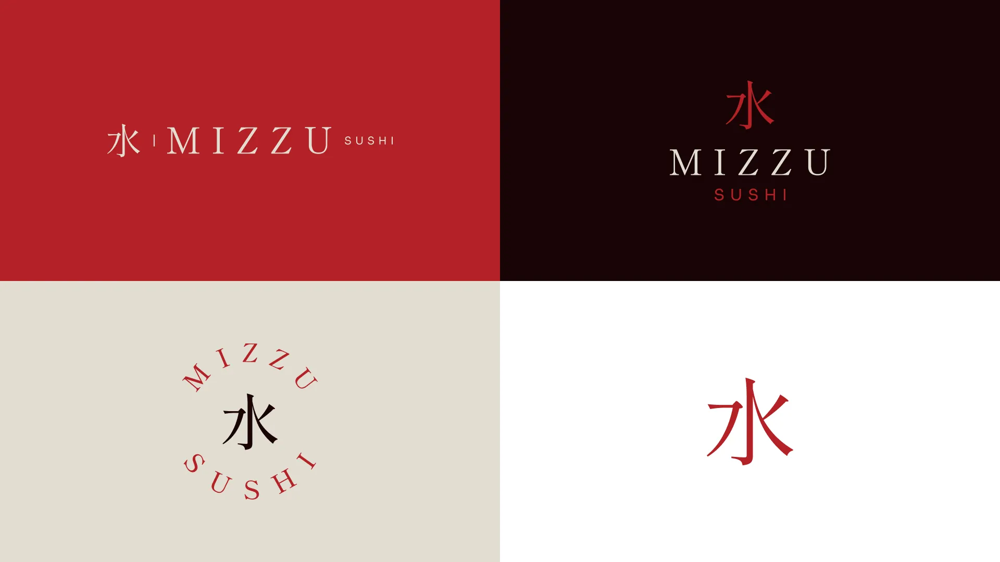
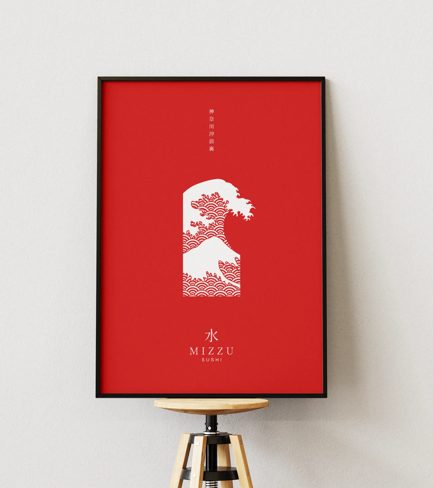
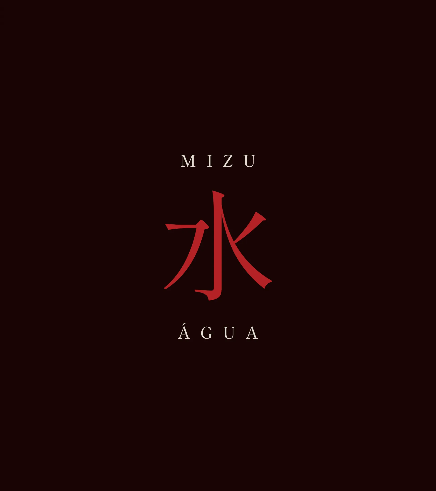
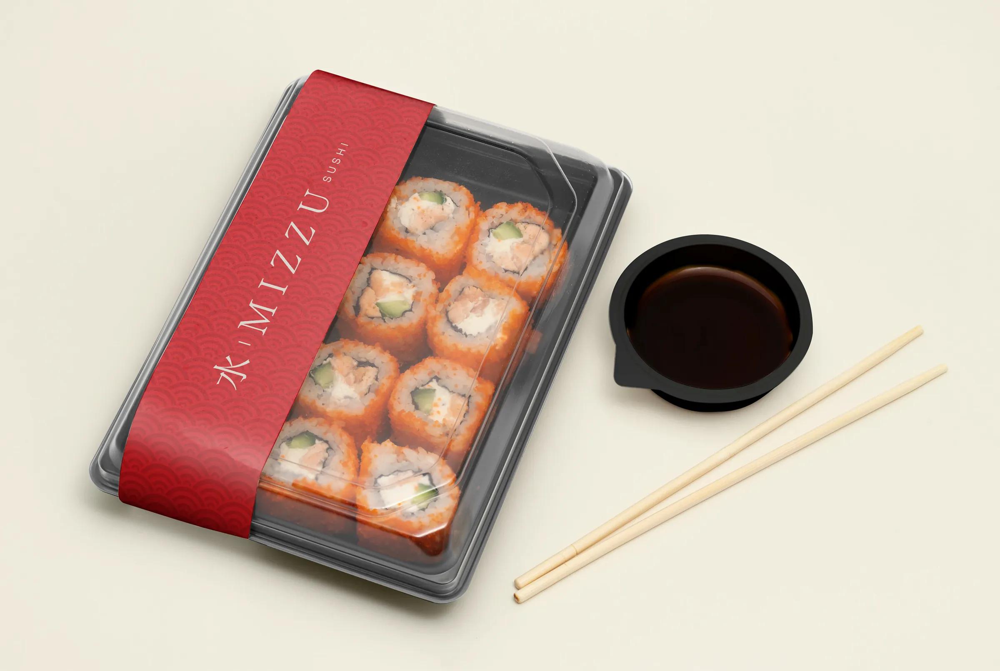
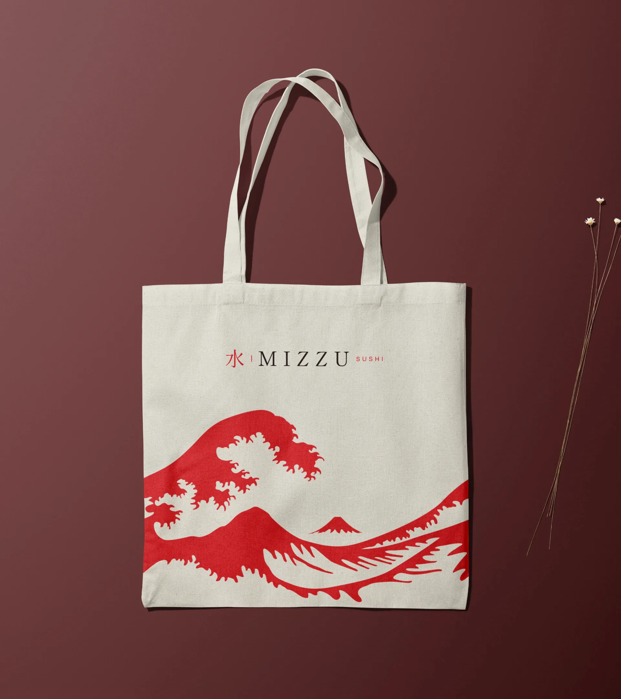
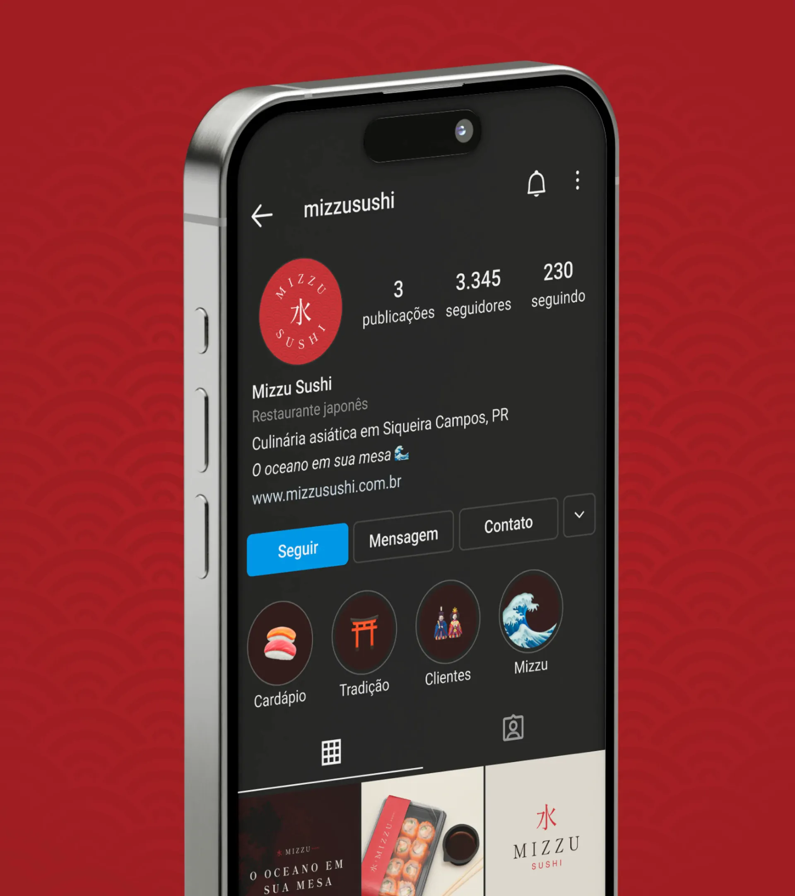
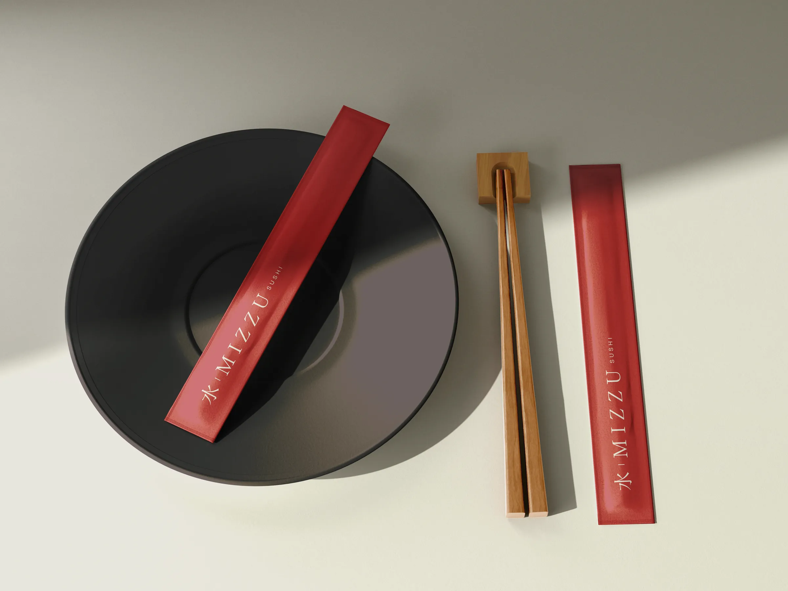
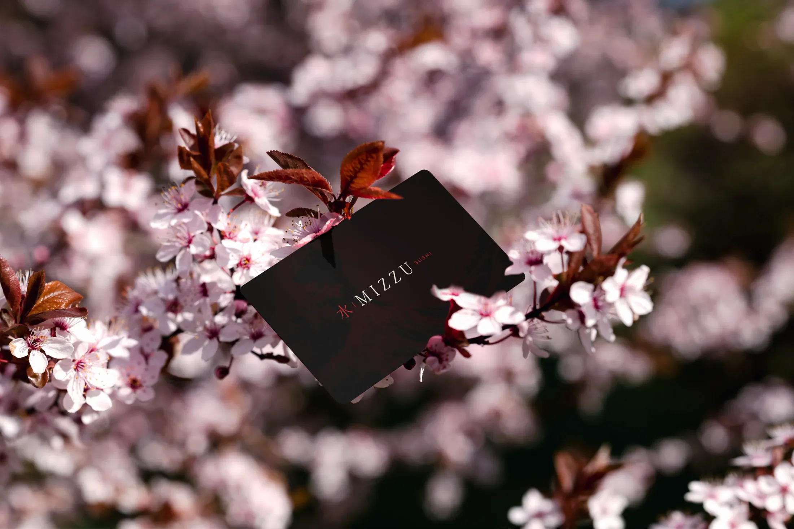
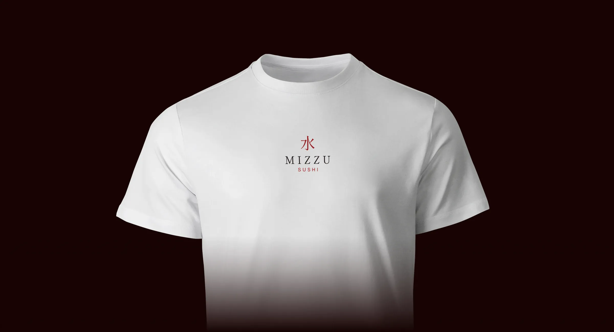
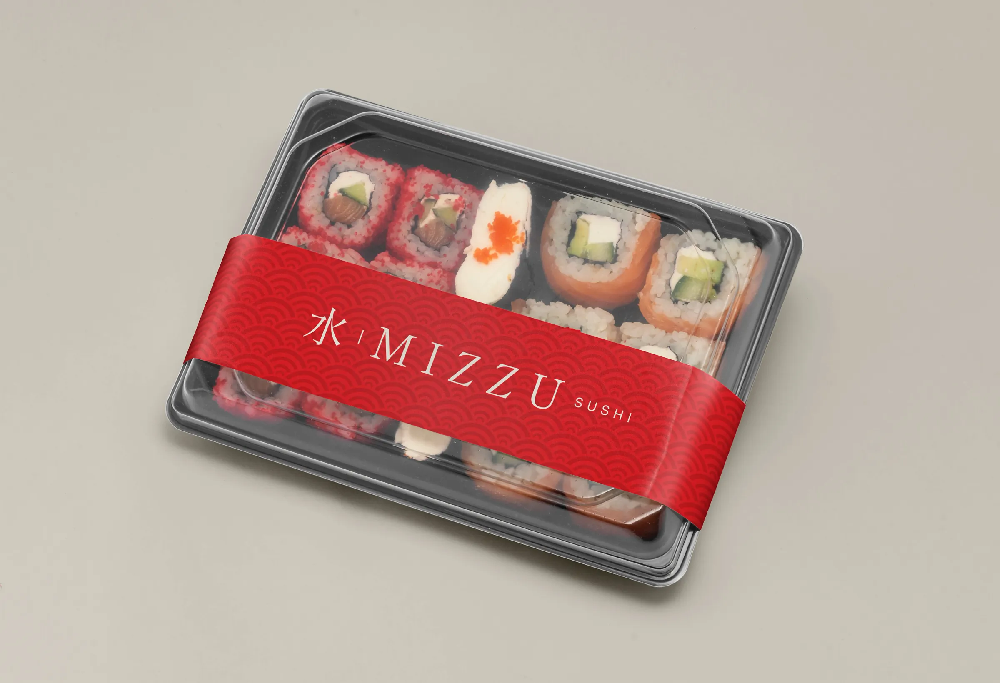

Mizzu Sushi
The ocean on your table.
Visual identity for a Japanese restaurant in Siqueira Campos, in the countryside of Paraná, Brazil. The name comes from mizu (水), Japanese for water: the link between water and seafood, the base of Japanese cuisine, guides the brand. An adaptation of The Great Wave off Kanagawa (Hokusai, 1830) evokes the Japanese heritage and brings the energy of the ocean to every application.

Mizu (水) means water. The word became the starting point: water as the link between the ocean and the plate. The ideogram takes the role of the symbol, the widely spaced serif typography brings the calm of tradition, and the red with a near-black brown recalls Japanese lacquer and ceramics.


A wave from 1830 as a signature.

The system extends across every customer touchpoint: the band on delivery trays, the chopstick sleeve, tote bag, business card, uniform and the Instagram profile. On every piece, the wave and the seal appear sparingly, letting the red do the work.






- Design and applications
- Nícolas de Queiróz
- Briefing
- Matheus Morita